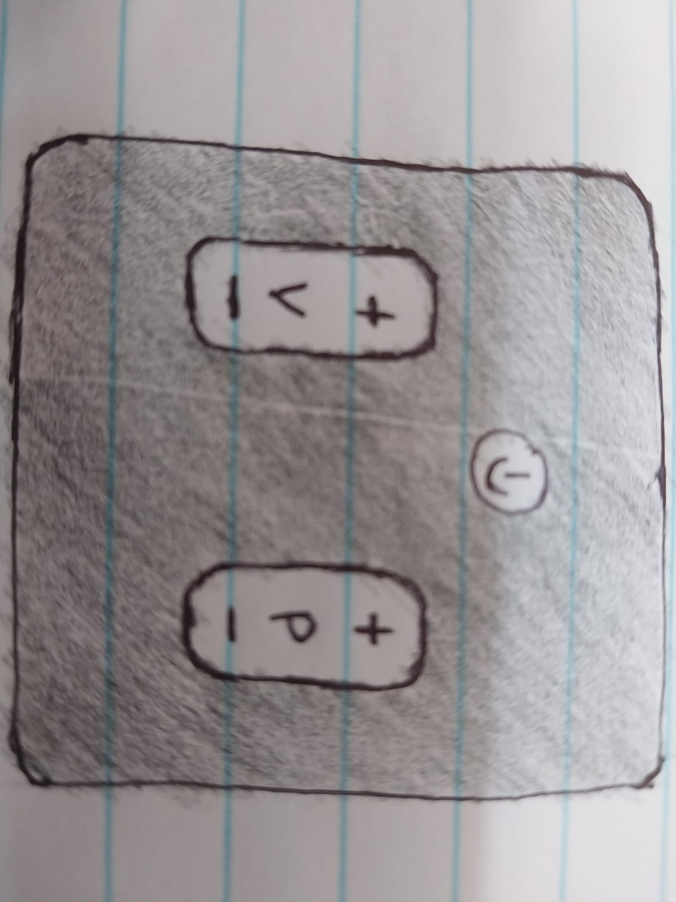
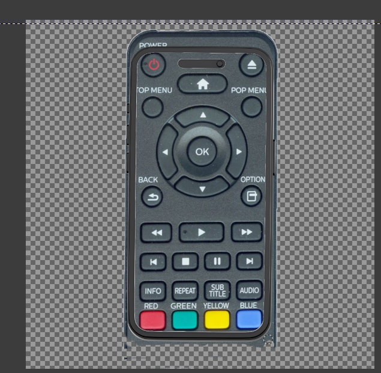

On This Page
week 2: weekly task
Date: From 07 October- To 13 October 2025
Quick Summary
- Skills Learned: Applying the 5 stages of Design Thinking (Empathize, Define, Ideate, Prototype, Test); problem framing; user empathy; brainstorming.
- Digital Tools and Software Used: VS Code for documentation, basic sketching tools (paper/pen) and digital sketch apps (GIMP).
- Topics: Human-centered design, problem identification, solution generation, rapid prototyping.
- Key Concepts: Empathy mapping, problem statements, ideation rules (quantity over quality, defer judgment, encourage wild ideas), annotated sketching.
- Challenges Faced:Narrowing down from many possible ideas to a single practical solution; making sure sketches were clear enough to communicate the concept.
Introduction
This week focused on learning and applying the Design Thinking Process, which involves five stages: Empathize, Define, Ideate, Prototype, and Test. The main goal was to apply these stages to an everyday frustrating object and document how the problem was approached, explored, and solved creatively.
Process Documentation
Chosen Object: TV Remote Control
Empathize: After interviewing two users, I found that most people feel the remote has too many buttons and often leads to confusion.
- Says: “This remote is confusing.”
- Thinks: “Why isn’t it designed more simply?”
- Does: Presses wrong buttons frequently.
- Feels: Frustrated, annoyed.
Ideate: Brainstormed 10 solutions, including a simplified remote with 5 buttons, a voice-activated remote, and a smartphone app.
Prototype: Selected 3 concepts to sketch:
- Minimalist Remote (5 buttons only) 
- Voice-Activated Remote
- Remote App on Smartphone
- used bucket fill tool to remove background
- Used unified transform tool to resize
- Used eraser tool remove the unwanted parts 


Reflection
Working through the design thinking process helped me understand how important it is to start with user needs before jumping to solutions. I learned that even a common object like a TV remote can be improved by focusing on simplicity and usability. The empathy stage showed me the real frustrations of users, and the ideation stage encouraged me to think broadly before narrowing down. I also realized that prototyping doesn’t need to be perfect drawings but clear ideas that communicate function.